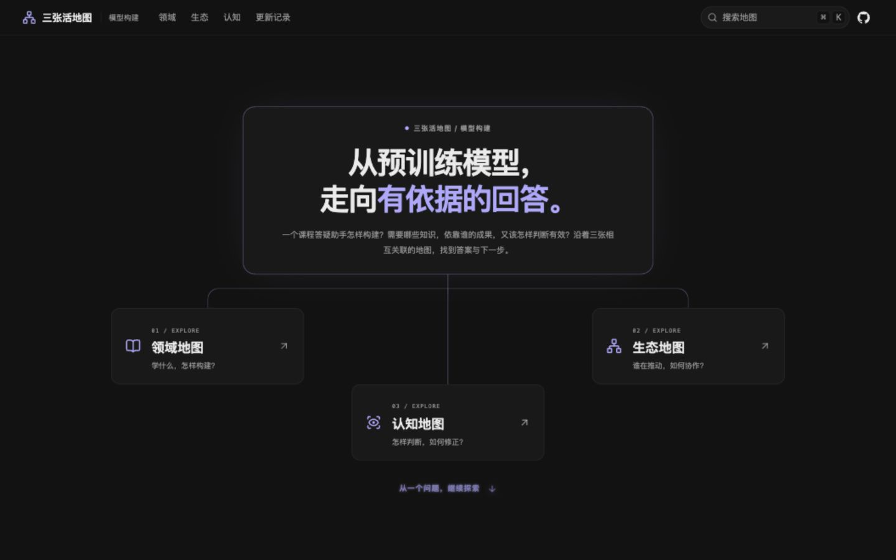
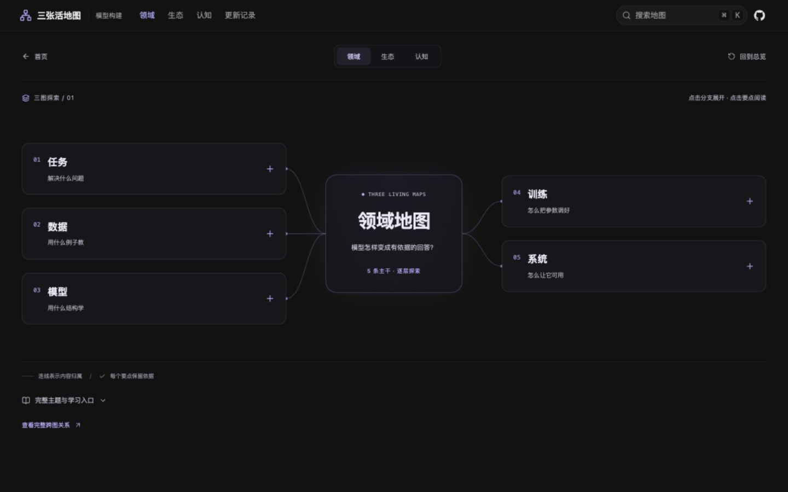
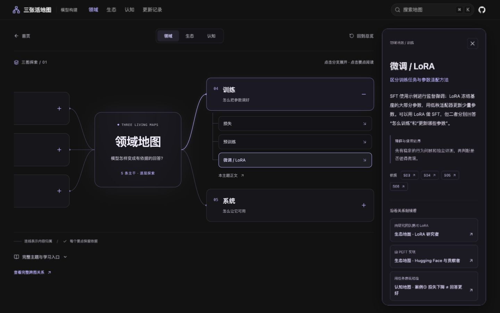
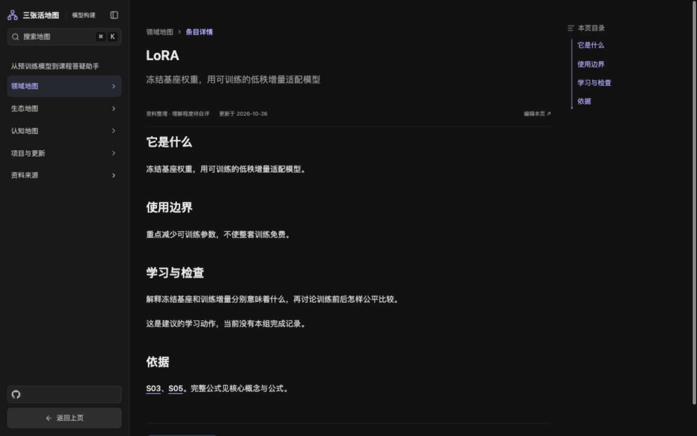
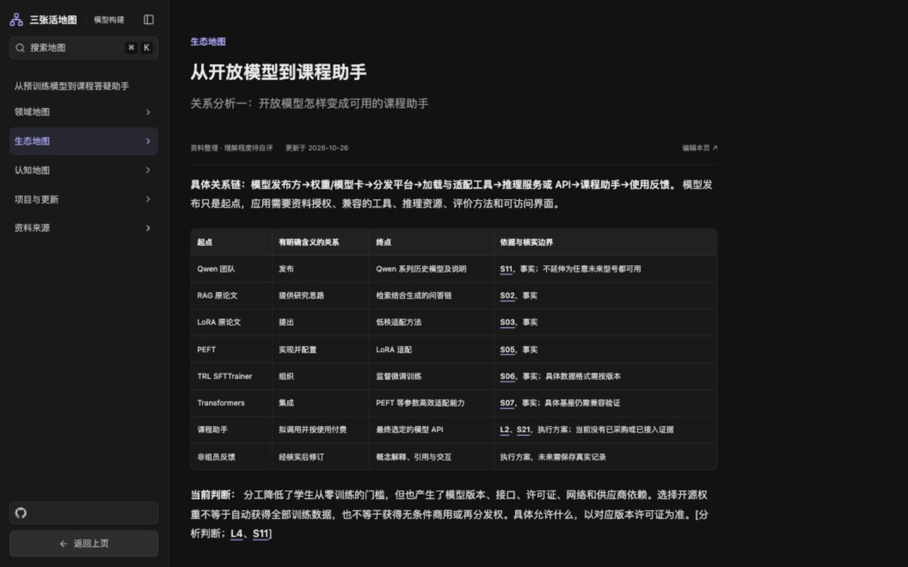
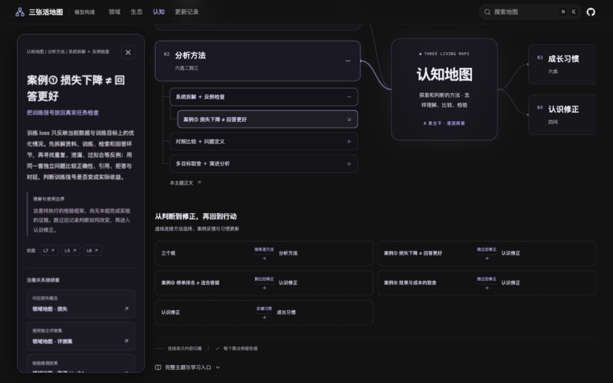
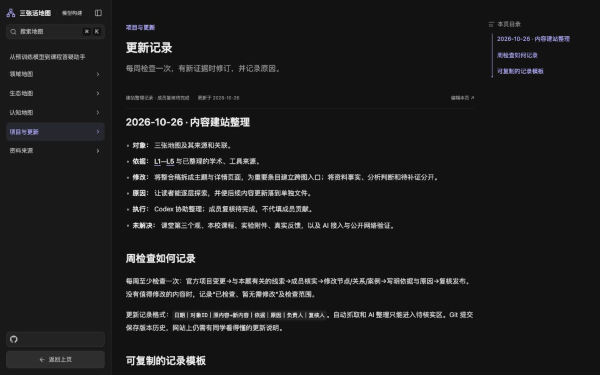
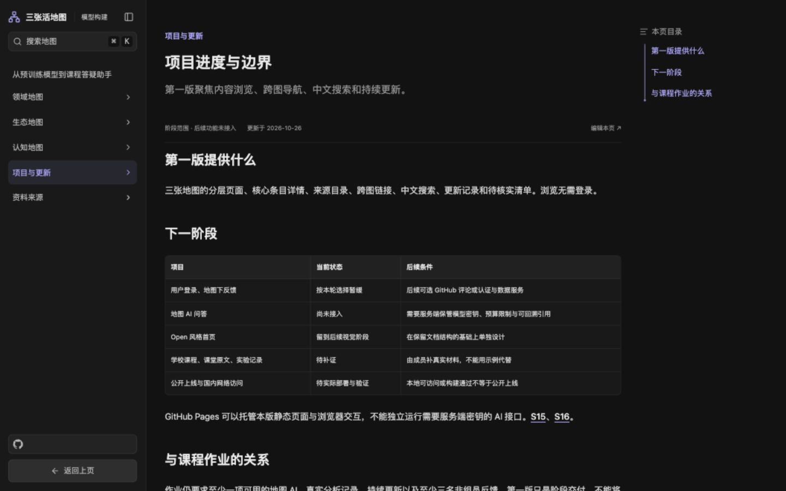

三张活地图：电脑端体验与作业要求审查
2026-10-27 · 视角：希望了解人工智能模型构建的学生 · 主视口1440×900，补查1366×768正文
判断：网站已具备清晰的三图分类、跨图阅读和来源意识；目前应重点提升从入门到实践的学习路径、桌面阅读效率和真实成果的完整性。
作业依据：仓库《三张活地图作业要求与网站实现整理.md》。体验证据来自本次公开网站访问。未独立复核课程原始作业全文、全部外部来源及国内多网络访问。
浏览步骤与截图证据
1. 首页与新手入口
入口清楚，学习起点需加强
三张地图的核心问题清楚，首屏构图完整。已有问题探索路线位于首屏之后；建议把“我第一次学，应该从哪里开始”提升为首屏主操作，补适用读者、学习产出和选题边界。

本次现场截图；点击查看原图。
2. 领域地图总览
可浏览，关系表达偏弱
任务、数据、模型、训练、系统五个主干便于扫描。但连线仅表达内容归属，不能直接说明工作流和技术关系。建议默认展示一条任务路径，在关键连线上标出依赖、用于、提出、检验等含义。

本次现场截图；点击查看原图。
3. 节点阅读面板
存在明显桌面可用性问题
1440×900下打开“微调 / LoRA”后，地图左侧分支标题移出可见区域。300px阅读栏内正文只有13px，长内容需要栏内滚动。建议使用可调宽度的画布与详情分栏，保证总览可恢复；窄桌面使用主路径列表配详情，提供聚焦和适应画布。

本次现场截图；点击查看原图。
4. LoRA完整正文
可读，内容密度与导航待改
16px正文、约30.4px行高，主内容区域约836px。描述与“它是什么”重复，大标题下往往只有一句话，目录占据额外空间。“完整公式见核心概念与公式”在本页是纯文字。建议短词条用紧凑术语卡；长教程用固定目录；补通俗解释、示例、关键原理和直接学习链接。

本次现场截图；点击查看原图。
5. 生态协作正文
关系与依据较好，图文需一致
关系表明确写出发布、提出、实现并配置等关系，也区分事实和拟执行方案，这是应保留的优点。相应地图仍以分类树呈现，关系价值埋在正文。建议用带标签的成果流转链展示关键关系，表格保留用于查证，并让关键实体可点击。

本次现场截图；点击查看原图。
6. 认知案例
框架清楚，真实证据不足
案例①明确说明是待执行的检验框架，尚无本组完成实验的证据，状态诚实。但“六选二到三”“六类”“四问”等用语更接近作业提纲。建议把真实问题和案例作为入口，展示问题、方法、比较材料、判断、局限及认识修正；未执行内容保持“实验计划”标签。

本次现场截图；点击查看原图。
7. 更新记录
有机制，尚不足以展示持续更新成果
本次页面展示2026-10-26建站整理与周检查、实验、反馈模板。模板不能替代真实记录。建议按节点展示改前与改后、依据、原因、负责人和复核人，并把最新实质更新放到首页。

本次现场截图；点击查看原图。
8. 项目状态与作业要求
关键要求仍待完成，状态需要同步
页面明确说明地图AI尚未接入、课程与实验材料待补证、三名非组员反馈仍是作业要求。页面仍写“公开上线待部署”，与本次可公开访问的状态不一致。应区分已公开上线和国内多网络验证待完成；同步清理过期计划。

本次现场截图；点击查看原图。
优化建议
结构
保留三图总览，增加一条完整的新手任务路线。统一地图页与正文页导航，显示“领域 / 训练 / LoRA”路径，并提供返回原节点。领域用流程，生态用参与者与成果关系，认知用问题与证据判断过程。
配色
黑紫风格统一，保留品牌色。三图可分别增加紫、青、琥珀等辅助标识，同时保留文字和图标。强化普通文字、次要文字、连线、边框的层级；选中态除颜色外增加标记。正文阅读提供浅色模式。具体色值需经过对比度验证。
内容
LoRA条目应解释为什么需要低秩增量、训练什么和冻结什么，以及如何在课程助手中使用和检验。来源显示短标题、年份和类型，例如“LoRA原论文 · 2021 · S03”，避免只给编号。课程按能力关联，并保留适用专业、年级、课程大纲与核验状态。
正文布局
短词条压缩重复标题与空白，长教程保留章节目录。可先尝试正文680—760px、16—18px、1.7—1.9行高、左导航220—240px；这些是设计起点，应以实际阅读验证。宽表格可独立扩展；避免页面和小详情栏同时承担大量滚动。
作业完成度
优先补至少一项直接服务地图且引用可回溯的AI能力、本组真实分析案例、课堂三个观依据、认识修正、周检查、三名非组员反馈和成员贡献。不能用普通搜索代替地图AI，也不能用实验计划代替已经执行的案例。
建议执行顺序
- 修复桌面节点面板导致的地图裁切；更新已经过期的项目状态。
- 完成一条真实的课程助手探索与验证路径，并补地图AI和引用回溯。
- 重排短词条，统一返回原节点与关联导航，补直接学习入口。
- 完善三图关系表现、文字层级与主题配色，再做整体视觉打磨。
限制：未完成屏幕阅读器、全键盘流程、200%缩放和全站色彩对比度测试。黑底小字与细线属于需进一步验证的可读性风险，不能据此判定完整WCAG符合性。正文宽度为实际页面DOM测量，改版尺寸为建议起点。截图及本报告保存在同一文件夹；未修改网站源码。